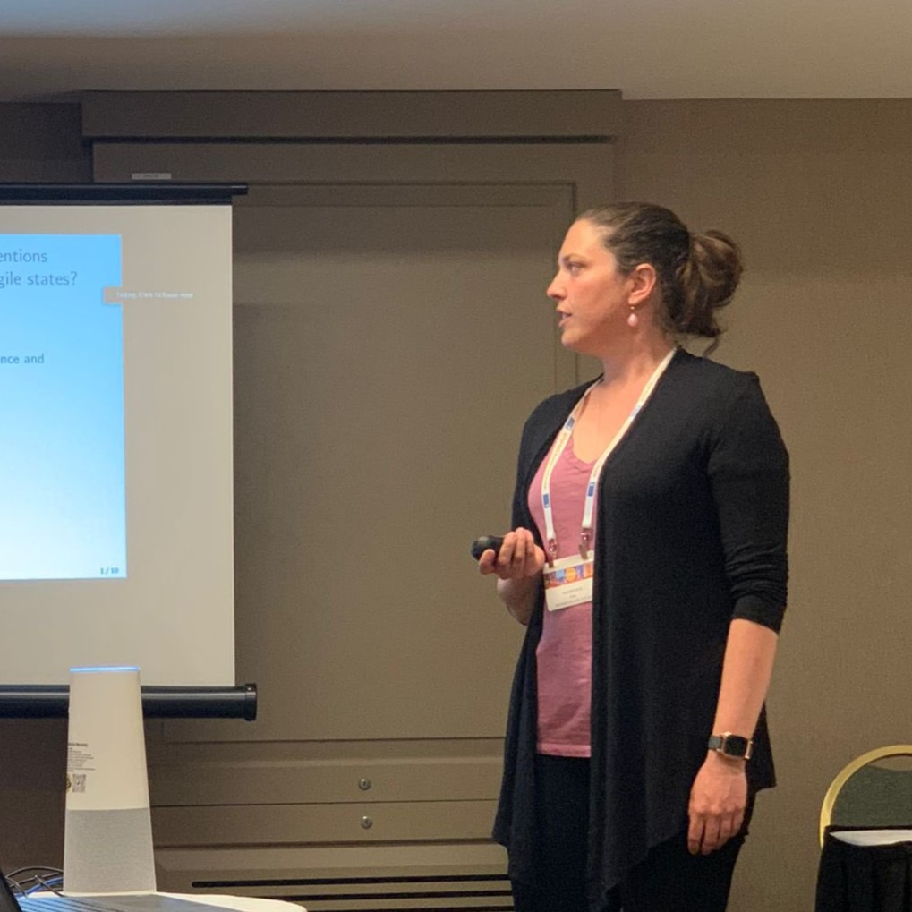

Teaching

I excited to teach both introductory and advanced courses in methods (quantitative and qualitative) at the undergraduate and graduate level, including time series, causal inference, and Bayesian statistics. I am also ready to teach global politics and formal theory, including courses on international political economy, development, and institutions. In all courses, I aim to help students develop foundational skills in critical thinking, writing, and problem-solving that they can apply to their academic careers and beyond.
New York University
Professor: Data Science for Politics (Undergraduate). Spring 2026.
Professor: Practical Training for Data Science (Graduate). Spring 2026, Summer 2026.
Washington University in St. Louis
Lecturer: Python Workshop (Graduate).
Teaching Assistant: Causal Inference (Graduate).
Teaching Assistant: Terrorism and Counterterrorism (Undergraduate).
Teaching Assistant: International Politics (Undergraduate).